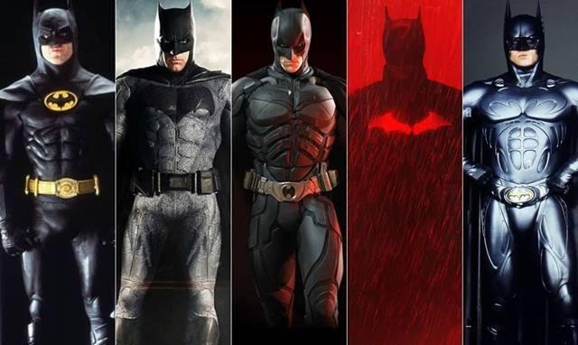
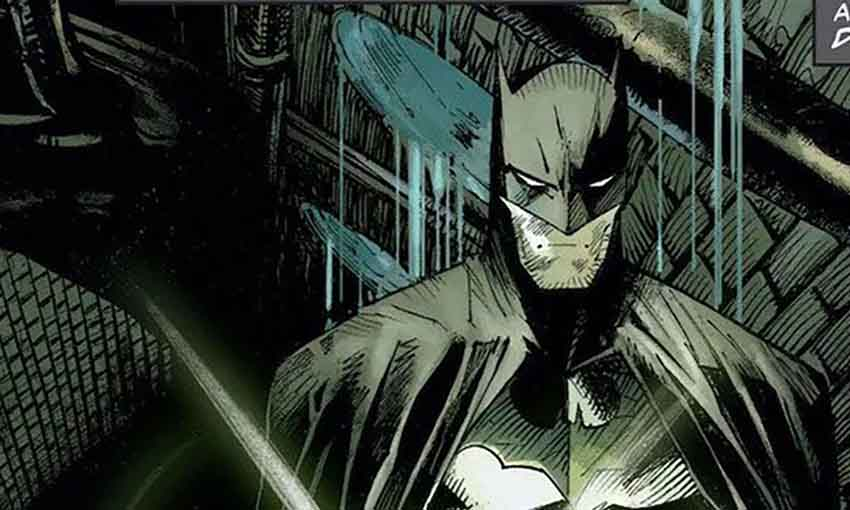

Batman - Historia
DC Comics nació en 1934 y se consolidó como una de las editoriales de cómics más importantes del mundo. Uno de sus personajes más emblemáticos es Batman, creado por Bob Kane y Bill Finger en 1939, quien debutó en Detective Comics #27.
Batman es considerado un ícono cultural y uno de los superhéroes más populares del mundo, conocido por su intelecto, habilidades de combate y la protección de Ciudad Gótica.
Momentos importantes de Batman
- Primera aparición en Detective Comics #27 (1939)
- Fundador de la Liga de la Justicia
- Película "The Dark Knight" considerada una de las mejores del género
Características de Batman
- Gran detective
- Maestro en artes marciales
- Uso de la tecnología avanzada
| Imagen | Descripción |
|---|---|
 |
Batman en los cómics de DC |
|  | Batman en el cine |
|  | Batman, historia y evolución |
Semestre: 7 Sistemas Computacionales
Número: 22690221
Grupo: U